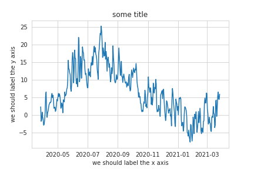
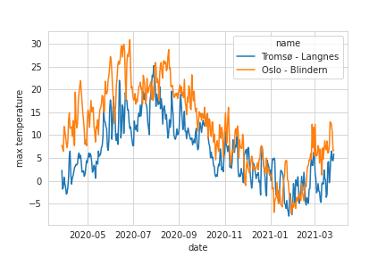
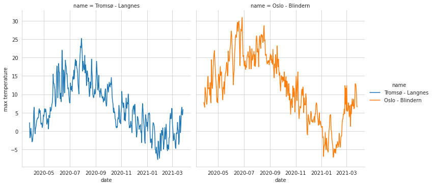
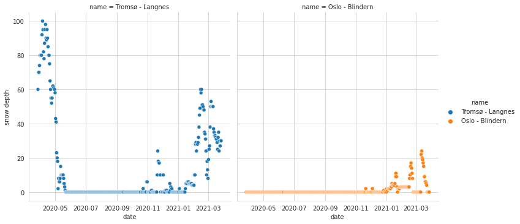

Reading and writing data with pandas¶
Objectives
Knowing that pandas is a popular library for handling tabular data
Learning some basic usage of pandas dataframes
Reading data with pandas from disk or a web resource
Get a feeling for when pandas is useful and know where to find more information
Instructor note
20 min talking/demo
15 min exercise
[this lesson is adapted from https://aaltoscicomp.github.io/python-for-scicomp/pandas/]
Use case¶
Pandas dataframes are a great data structure for tabular data. The pandas library provides dataframes, and functions for reading data into dataframes and for analyzing, filtering, and manipulating data in very compact form.
The name is derived from the term “panel data”.
Reading data into a dataframe¶
Pandas can read from and write to a large set of formats (overview of input/output functions and formats).
We will experiment with some example weather data obtained from Norsk KlimaServiceSenter, Meteorologisk institutt (MET) (CC BY 4.0).
We will load a CSV file directly from the web. Instead of using a web URL we could use a local file name instead.
Try this:
import pandas as pd
url = "https://raw.githubusercontent.com/coderefinery/data-visualization-python/main/data/tromso.csv"
data_tromso = pd.read_csv(url)
data_tromso
Discussion
Does not look quite right. Can you spot two problems?
We can solve the problem with delimiters and avoid a problem later down the road by specifying that the decimal is a comma:
import pandas as pd
url = "https://raw.githubusercontent.com/coderefinery/data-visualization-python/main/data/tromso.csv"
data_tromso = pd.read_csv(url, delimiter=";", decimal=",")
What is in a dataframe?¶

A pandas dataframe object is composed of rows and columns.¶
Let us explore these together in the notebook:
# print an overview of the dataset
data_tromso
# print the first 5 rows
data_tromso.head()
# print the last 5 rows
data_tromso.tail()
# print all column titles - no parentheses here
data_tromso.columns
# print table dimensions - no parentheses here
data_tromso.shape
# print one column
data_tromso["max temperature"]
# get some statistics
data_tromso["max temperature"].describe()
data_tromso["max temperature"].max()
data_tromso["max temperature"].median()
# print all rows where max temperature was above 20
data_tromso[data_tromso["max temperature"] > 20.0]
Combining dataframes¶
Using pandas we can merge, join, concatenate, and compare dataframes, see https://pandas.pydata.org/pandas-docs/stable/user_guide/merging.html.
Let us try to concatenate two dataframes: one for Tromsø weather data (which we
already loaded into data_tromso) and one for Oslo:
import pandas as pd
url = "https://raw.githubusercontent.com/coderefinery/data-visualization-python/main/data/oslo.csv"
data_oslo = pd.read_csv(url, delimiter=";", decimal=",")
Now we can concatenate them:
data = pd.concat([data_tromso, data_oslo], axis=0)
# let us print the result
data
Once combined, we can do interesting queries like this one:
data.groupby("name").describe()
Data cleaning¶
Before plotting the data, there are two more problems which we may not see yet:
Dates are not in a standard date format
Snow depth sometimes contains “-” which Python may have difficulties interpreting as a number
We can clean up both these problems
# replace dd.mm.yyyy to date format
data["date"] = pd.to_datetime(data["date"], format="%d.%m.%Y")
# replace "-" by 0
data['snow depth'] = pd.to_numeric(data['snow depth'], errors='coerce')
Plotting the data¶
Let’s plot the data. We will start out in Matplotlib but later also test out Seaborn which is built around Matplotlib and pandas dataframes.
import matplotlib.pyplot as plt
fig, ax = plt.subplots()
# make sure the date axis is in the right format
# we fixed it above for data but not for data_tromso
data_tromso["date"] = pd.to_datetime(data_tromso["date"], format="%d.%m.%Y")
ax.plot(data_tromso["date"], data_tromso["max temperature"])
ax.set_xlabel("we should label the x axis")
ax.set_ylabel("we should label the y axis")
ax.set_title("some title")
# uncomment the next line if you would like to save the figure to disk
# fig.savefig("temperatures-tromso.png")

Max daily temperatures in Tromsø over a year.¶
Graph looks OK, a litte rough, in a later episode we will discuss how to beautify plots but this is good enough now for a quick data exploration.
Let’s try this in Seaborn! We will see that this is more compact:
import seaborn as sns
# https://seaborn.pydata.org/generated/seaborn.set_style.html
sns.set_style("whitegrid")
plot = sns.lineplot(x="date", y="max temperature", hue="name", data=data)
# uncomment next line to save the figure
# plot.figure.savefig("temperatures.png")

Max daily temperatures in Tromsø and Oslo over a year.¶
plot = sns.relplot(x="date",
y="max temperature",
hue="name",
col="name", # try commenting this out or changing to "row"
kind="line",
data=data)
# uncomment next line to save the figure
# plot.savefig("temperatures-side-by-side.png")

The same data as above, this time side by side.¶
Note how by changing two lines we can change the style and the data plotted:
plot = sns.relplot(x="date",
y="snow depth",
hue="name",
col="name", # try commenting this out or changing to "row"
kind="scatter",
data=data)
# uncomment next line to save the figure
# plot.savefig("snow-depth.png")

Snow depth side by side.¶
Where to find more information and help¶
Pandas is extremely powerful and there is a lot that can be done and there are great resources to explore more:
Getting started guide (including tutorials and a 10 minute flash intro)
Data Carpentry lesson “Data Analysis and Visualization in Python for Ecologists” (useful not only for ecologists)
Exercises¶
Save the following CSV file, then choose one of these two:
Pandas-1A: read a CSV file from disk and plot using Seaborn
Pandas-1B: read a CSV file from disk and plot using Matplotlib
Save this as example.csv (this is the Anscombe’s quartet):
dataset,x,y
I,10.0,8.04
I,8.0,6.95
I,13.0,7.58
I,9.0,8.81
I,11.0,8.33
I,14.0,9.96
I,6.0,7.24
I,4.0,4.26
I,12.0,10.84
I,7.0,4.82
I,5.0,5.68
II,10.0,9.14
II,8.0,8.14
II,13.0,8.74
II,9.0,8.77
II,11.0,9.26
II,14.0,8.1
II,6.0,6.13
II,4.0,3.1
II,12.0,9.13
II,7.0,7.26
II,5.0,4.74
III,10.0,7.46
III,8.0,6.77
III,13.0,12.74
III,9.0,7.11
III,11.0,7.81
III,14.0,8.84
III,6.0,6.08
III,4.0,5.39
III,12.0,8.15
III,7.0,6.42
III,5.0,5.73
IV,8.0,6.58
IV,8.0,5.76
IV,8.0,7.71
IV,8.0,8.84
IV,8.0,8.47
IV,8.0,7.04
IV,8.0,5.25
IV,19.0,12.5
IV,8.0,5.56
IV,8.0,7.91
IV,8.0,6.89
Exercise Pandas-1A: read a CSV file from disk and plot using Seaborn (15 min)
Save the above CSV file to disk as
example.csvin the same folder where you run JupyterLab.Then try this:
import pandas as pd import seaborn as sns data = pd.read_csv("example.csv") # try to change "talk" to "poster" # try also to outcomment the following line sns.set_context("talk") plot = sns.relplot(x="x", y="y", hue="dataset", col="dataset", col_wrap=2, # try to outcomment this line data=data) # uncomment next line to save the figure # plot.savefig("example.png")
If you have time, try to customize the plot.
Exercise Pandas-1B: read a CSV file from disk and plot using Matplotlib (15 min)
Save the above CSV file to disk as
example.csvin the same folder where you run JupyterLab.Then try this:
# this line tells Jupyter to display matplotlib figures in the notebook %matplotlib inline import pandas as pd import matplotlib.pyplot as plt data = pd.read_csv("example.csv") # for matplotlib we need to split the dataset up # not sure this is the most elegant way data1 = data[data["dataset"] == "I"] data2 = data[data["dataset"] == "II"] data3 = data[data["dataset"] == "III"] data4 = data[data["dataset"] == "IV"] fig, ax = plt.subplots() ax.scatter(x=data1["x"], y=data1["y"], c="blue", label='I') ax.scatter(x=data2["x"], y=data2["y"], c="orange", label='II') ax.scatter(x=data3["x"], y=data3["y"], c="green", label='III') ax.scatter(x=data4["x"], y=data4["y"], c="purple", label='IV') ax.set_xlabel("we should label the x axis") ax.set_ylabel("we should label the y axis") ax.set_title("some title") ax.legend() # uncomment next line to save the figure # fig.savefig("example.png")
If you have time, try to customize the plot.
Keypoints
Pandas dataframes are a good data structure for tabular data
Dataframes allow both simple and advanced analysis in very compact form
Some visualization libraries interface very nicely with pandas dataframes